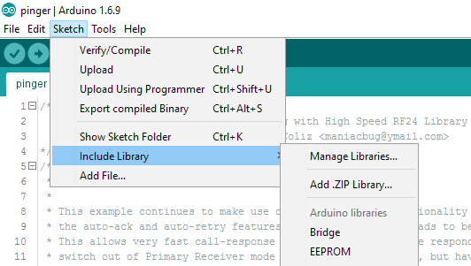
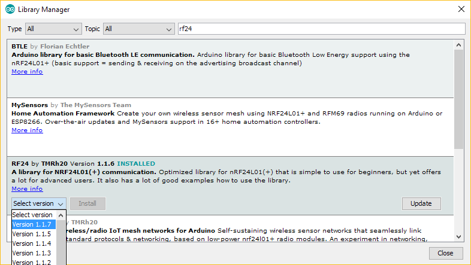
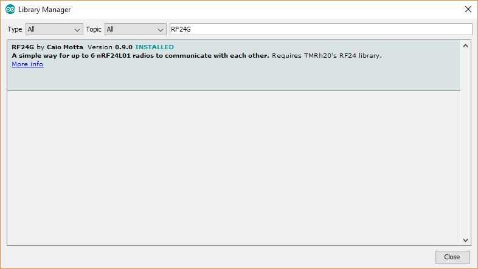
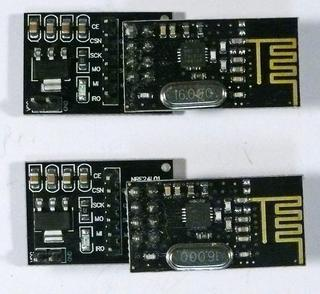
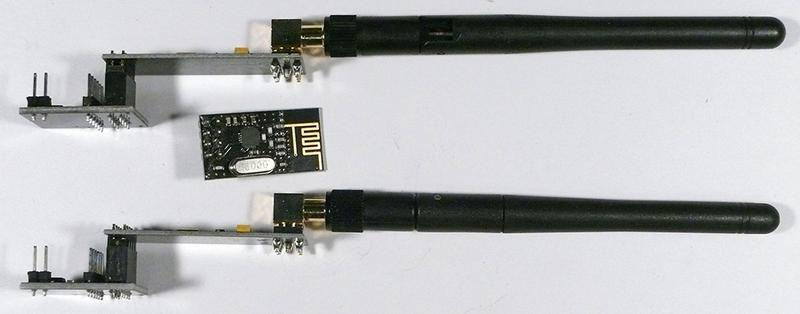
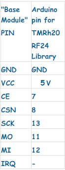

About
The nRF24L01+ wireless transceiver board allow for wireless communication between two or more radios at distances greater than Bluetooth or standard WiFi. This tutorial includes an overview of the different types or radios available in the store, wiring the radios to an Arduino, an example sketch that allows for two way communication, and finally tips and tricks to increase your success with the radios.
Purchasing
There are two versions available in the UCSB ECE store. They also can be purchased on the yourduino website (http://www.yourduino.com/sunshop/) The high power transceiver has amplifiers and an external antenna. It has been tested to work at ranges in excess of 350 meters. The low power transceivers have an internal antenna and work at about 20 meters. The two different types can work together. Se the tips and tricks section for more info.
Installation
This library requires thmr20's radio driver. Both can be found in the Arduino repository.
First, go to sketch→Include Library→Manage Libraries...

The library manager will show as an additional window.
Search for rf24 and select version 1.1.7 of TMRh20’s RF24 Library.

Press install.
Next, add version 0.9 of the RF24G library.

Press install.
Wiring
First, attach the either the high power or low power radio module to the base module


Next, connect jumpers between the Arduino and the base module using this table

General concepts
This library provides an abstraction layer that allows the user identify each radio by an address and each transmission as a packet.
Up to 6 radios can be used in the network, with each having a unique address: (0, 1, 2, 3, 4, 5).
Each radio is initialized using an RF24_G object, which provides the ability to read and write packets.
This library uses the built in functions of the radio to ensure guaranteed delivery; However, like any practical guaranteed transmission network, there is a timeout.
The after 30 retransmit attempts, the radio gives up and returns that it has failed to transmit a packet. More info can be seen it the RF24_G::read() docs.
The packet class is an object that contains all the necessary information to bring data to and from each radio, as well as let each radio keep track of any dropped packets.
A packet allows for any playload that is 30 bytes long. The payload can be any type or array of types.
How to use this documentation.
Read the packet and RF24_G class documentation. It provides a description of what every class and object in the library is for.b
Check the examples to understand the way the two classes are used to send data from one radio to another.
 1.8.12
1.8.12